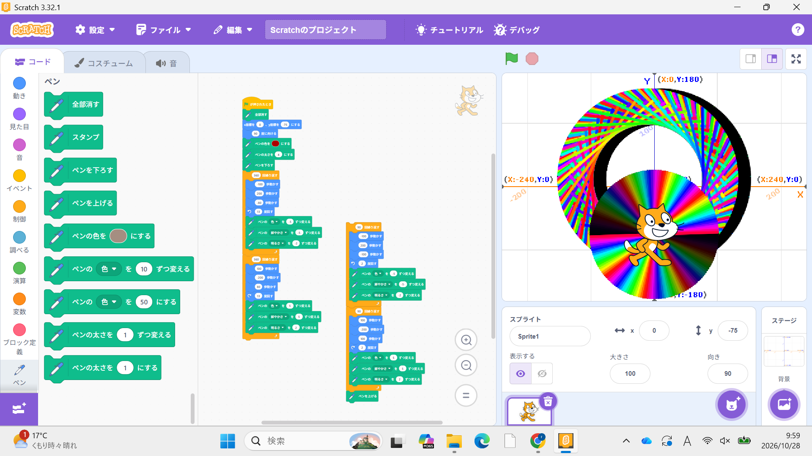
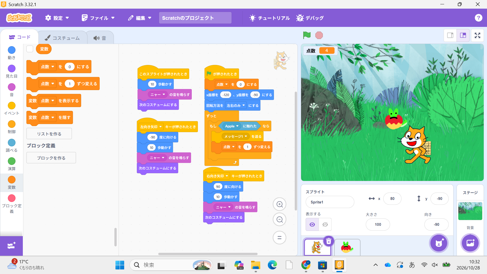

1週目のレポート ： 公大高専１年実習I-1
3b班28番 ハルル
第1週目
1-1 サイエンスアート

1.内容
スクラッチを使ってサイエンスアートを創るという内容で
ペンを使って猫を動かしたときに線ができるのを利用して様々な模様を描いていく授業でした。
2.感想
猫が動く距離や角度、方向によって星型だったり様々な幾何学模様ができそうだと思って、
もっとスクラッチに触れて様々なアートを創りたいと思った。
1-2 ゲーム

1.内容
猫がリンゴをとるゲームを作る授業で、
猫は右矢印キーが押されたら右に向かい、左矢印キーが押されたら右に向かいでリンゴに触れるとポイントが増える。
リンゴはランダムな場所から下に落ちてくるプログラム。
2.感想
基本の動きはとても簡単で猫にジャンプができるようにプログラムしたり、
リンゴ以外の果物を増やて様々な条件を付けくわえたりしてもっとゲーム性を高めたいと思った。
1-3 ホームページ作成
私のホームページ
1.内容
先に作られたテンプレートをもとに特技の欄や趣味の欄、
日にちなどを変えていきオリジナルなホームページを作成する授業。
他にはGitHub上でレポートを作成したりした。
2.感想
ホームページに自分の言葉を打ち込んだり、改行したり、
自分の持っている写真を張り付けたりする方法がわかった。
それに今回の授業で習った作り方をしっかりと理解しづることができた。
各ページへのリンク
1週目のレポート
2週目のレポート
3週目のレポート
私のホームページ